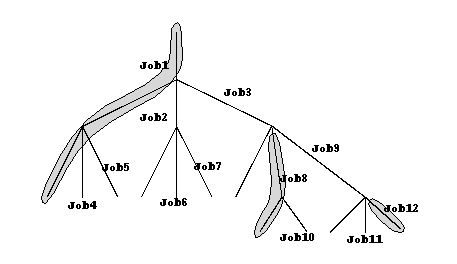

MGTPは並列化に非常に適した構造を有しており、 実際AND並列、OR並列のいずれにおいても望ましい台数効果が 達成されている[]。 CMGTPは基本的にMGTPのアルゴリズムに従っているので、 CMGTPもまた並列化効果が高いことが期待される。 特に準群問題は、Non-Horn問題であり、 場合分けが多数発生することなどからOR並列効果の高いことが期待できる。 以下では、CMGTPの並列化の方法について説明する。
CMGTPにおける証明木は以下に示すように、 OR分岐による木構造となっている。

ただし、準群問題の場合は、枝の長さが予期できない上、 場合分けの個数もまちまちであるので、pegion hole問題などのような balanced treeではなくimbalanced treeである。
並列実行においては、木のあるノードで場合分けが生じた時、
一本の枝は自分自身のプロセッサで処理し、
その他の枝は他のプロセッサに投げるものとする。
このとき、親ノードから受け継いだ枝を一つのジョブと考えると、
上図の例では、合計12個のジョブが存在することになる。
一般にジョブの長さはまちまちである。
例えば、Job1は非常に浅いレベルで生成された枝であり、
非常に長いジョブになっているが、
Job8やJob12はそれよりも深いレベルで生成された枝であり、
Job1に比べると短い枝となっている。
並列化の方法は、このようなジョブをどのようにプロセッサに割り当てるか、 という問題に置き換えることができる。 たとえば、以下のような方法が考えられる。
いくつかの実験結果から、 この中では枝数制限方式が平均的に有利である ということが言えるようである。